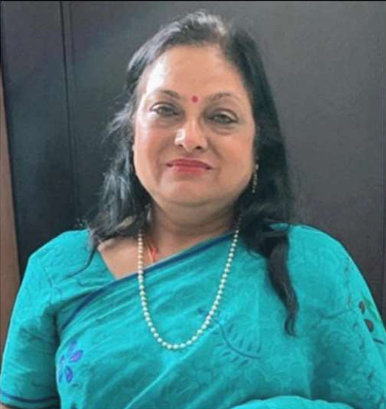

- Political Theory
- Indian Government and Politics
- Ancient Indian Political Thought
- Modern Indian Political Thought
- Women Studies
- Gandhian Studies

Dr. Kshama Sharma
Associate Professor, Department of Political Science

Contact Details
-
Address
- 177 Surya Niketan 1st Floor, Opp Anand Vihar Colony, New Delhi – 110092
-
Mobile
- 9891400988
-
Email
- kshamasharma.ps@rla.du.ac.in
Education
Career Profile
- Ph.D. Magadh University 1991
- M.Phil University of Delhi 1986
- M.A./M.Sc. University of Delhi 1984
- Started career as Research Associate at Women's Development and Study Center at Delhi University and All India Management Association, New Delhi.
- Worked as Guest/Ad-hoc/Temporary Lecturer in the Department of Political Science at various Colleges of Delhi University.
- From 1995 onwards working as Permanent Faculty member in the Department of Political Science at Ram Lal Anand College, Delhi University.
Education
Career Profile
Subjects Taught
Conference Organization & FDP Programs
- Organized FDP (Faculty Development Program) programs
- Organized Certificate Courses
- Organized National Seminar on "Dr. Ambedkar's Thoughts and Vision" in collaboration with the Delhi Regional Branch of IIPA (2013)
- Organized Various Departmental seminars and Departmental Activities
Area of interest
Administrative Assignments
Areas of Interest / Specialization
- Political Theory
- Indian Government and Politics
- Ancient Indian Political Thought
- Modern Indian Political Thought
- Women Studies
- Gandhian Studies
Administrative Assignments
- Convenor/Co-Convenor of the admissions committee
- Member of Cultural and Functions Committees
- Member of Discipline and Grievance Committee
- Member of Fees Concession Committee
- Co-Convenor of the Dramatic Society
- Convenor, Co-Convenor and Member of Paper Setting and Paper Checking Committees
- Head of the Department in Selection Committees
Publications Profile
- More than 10 research articles published
- Book Chapters in various publications
- Research articles in scholarly Journals
- Specialization in Political Theory, Indian Politics, and Women Studies
Professional Memberships
- Life Member of Indian Institute of Public Administration (IIPA), New Delhi
Other Activities & Notable Contributions
- Organized National Seminar on "Dr. Ambedkar's Thoughts and Vision" by Dr. B. R. Ambedkar Chair in Social Justice in collaboration with Delhi Regional Branch of IIPA, 2013
- Organized Various Departmental seminars and Departmental Activities at Ram Lal Anand College
- Active member in college governance and institutional development
- Contributed to multiple committees for institutional administration